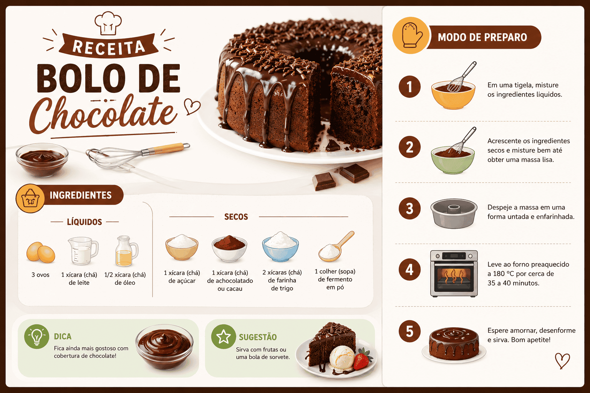

Receita: O que é o Gênero Textual, Características e Estrutura
De bolos de cenoura a manuais para a felicidade: a receita é um dos gêneros textuais mais antigos, populares e presentes no nosso dia a dia. Você pode até não gostar de cozinhar, mas com certeza já leu, assistiu ou ouviu uma receita em algum momento da vida.
Do ponto de vista linguístico, a receita é o exemplo mais clássico da tipologia injuntiva (ou instrucional). Ela tem uma missão muito clara: ensinar o leitor a fazer algo, passo a passo, orientando suas ações sem o tom autoritário e punitivo de uma lei (texto prescritivo).
Mas por que estudar receitas para o vestibular? No ENEM e em diversas provas de Linguagens, esse gênero não cai para testar seus dotes culinários, mas sim para avaliar sua capacidade de identificar funções da linguagem (especialmente a função apelativa/conativa), o uso dos verbos no modo imperativo e, frequentemente, a interpretação de receitas poéticas ou metafóricas (como "Receita de Ano Novo", de Carlos Drummond de Andrade).
Neste conteúdo, você vai aprender o que caracteriza o gênero receita, sua estrutura padrão obrigatória e como as bancas costumam cobrar esse tipo de texto instrucional nas provas.

O que é o gênero textual Receita?
A receita é um gênero textual instrucional cuja finalidade é orientar o leitor na preparação de um alimento, bebida ou mistura. Para isso, ela se utiliza de uma linguagem direta, clara e sequencial, garantindo que qualquer pessoa, ao seguir as etapas descritas, consiga reproduzir o resultado esperado.
Receita é um texto predominantemente injuntivo que lista os materiais necessários (ingredientes) e dita as ações passo a passo (modo de preparo) para a conclusão de uma tarefa prática.
Quais são as principais características da Receita?
Para que o prato não "desande", a linguagem da receita precisa ser exata. Veja as marcas linguísticas que definem esse gênero:
Marcas linguísticas e estruturais
- Verbos no Modo Imperativo: É a alma da receita. O texto o tempo todo dá comandos: "bata", "misture", "asse", "adicione", "não deixe queimar".
- Verbos no Infinitivo: Algumas receitas substituem o imperativo pelo infinitivo, mantendo o valor de ordem: "Bater as claras", "Misturar o açúcar".
- Linguagem Denotativa e Exata: Não há espaço para ambiguidades na parte prática. Utiliza-se numerais precisos (frações, gramas, xícaras, mililitros).
- Função Apelativa (Conativa): Como o objetivo é influenciar o comportamento do leitor (fazer com que ele execute os passos), essa é a função da linguagem dominante.
Pegadinha Literária: A Receita Metafórica
No ENEM, é muito comum cair um poema que "imita" a estrutura de uma receita, como "Receita de Mulher" (Vinicius de Moraes) ou "Receita de Acordar". Nesses casos, embora a estrutura e os verbos sejam injuntivos (misture afeto, bata a tristeza), a função principal passa a ser Poética, pois o objetivo não é cozinhar algo real, mas provocar emoções usando o formato da receita como figura de linguagem.
Qual é a estrutura de uma Receita?
A receita culinária tradicional é dividida em blocos bem definidos, facilitando a leitura rápida e a execução simultânea.
| Parte | O que apresenta |
|---|---|
| 1. Título | O nome do prato que será preparado (Ex: Bolo de Cenoura com Cobertura de Chocolate). |
| 2. Ingredientes | Uma lista detalhada (geralmente em tópicos) de todos os itens necessários, sempre acompanhados de numerais e unidades de medida (colher de sopa, xícara, gramas). Tipologia descritiva. |
| 3. Modo de Preparo | O passo a passo sequencial. Aqui entra a força da tipologia injuntiva, utilizando verbos no imperativo para ditar a ordem cronológica das ações. |
| 4. Informações Extras (Opcional) | Rendimento (quantas porções rende), tempo de preparo (ex: 40 minutos) e grau de dificuldade. |
Questão de aplicação
Questão: (ENEM / Adaptada) Leia o texto abaixo:
Receita para um bom ano
Pegue 12 meses inteiros.
Limpe-os bem de toda amargura, ódio e inveja.
Divida cada mês em 30 ou 31 partes iguais, de forma que o estoque dure um ano inteiro.
Tempere com pitadas de alegria e sirva com um sorriso diário.
No texto acima, o autor apropria-se da estrutura de um gênero textual comum no cotidiano. A respeito desse texto, é correto afirmar que:
- Pertence ao gênero prescritivo, pois impõe ao leitor leis rigorosas de comportamento sob pena de punição.
- O autor utiliza a forma do gênero receita culinária, marcada por verbos no imperativo ("Pegue", "Limpe", "Divida"), para construir uma mensagem de reflexão poética.
- Trata-se de uma carta aberta, pois o autor se dirige publicamente à sociedade sugerindo ingredientes para o ano novo.
- Predomina a função referencial da linguagem, visto que o texto informa dados exatos e fracionados sobre os meses do ano.
- É um texto puramente descritivo, uma vez que detalha as características físicas de um sorriso.
Resolução
A alternativa correta é a 2 — O autor utiliza a forma do gênero receita culinária...
Este é o clássico exemplo da "receita metafórica" no ENEM. O autor pega "emprestada" a estrutura instrucional/injuntiva da receita (Modo de preparo, verbos de comando no imperativo como "Pegue", "Sirva") para criar um texto figurado (conotativo) sobre como viver bem. Não é prescritivo pois não impõe leis; é um aconselhamento literário.
Resumo: Como dominar o Gênero Receita?
A receita é o melhor exemplo de texto que ensina a fazer algo passo a passo.
- Tipologia predominante: Injuntiva (Instrucional).
- Linguagem: Clara, direta, uso intenso da função conativa/apelativa.
- Verbos: Sempre no modo Imperativo (Faça, misture) ou Infinitivo (Fazer, misturar).
- No vestibular: Fique atento às receitas literárias/poéticas, onde a estrutura de culinária é usada para passar mensagens sobre a vida, amor ou sociedade.
Continue estudando Produção Textual
- Texto Injuntivo: O que é, Características, Exemplos e Diferenças
- Texto Prescritivo: O que é, Características, Exemplos e Diferenças
- Texto Descritivo: O que é, Características, Tipos e Exemplos
- Gêneros discursivos: conceito, tipos e exemplos
- Produção Textual e Redação — página 1
- Produção Textual e Redação — página 2
Referências
KOCH, Ingedore Villaça; ELIAS, Vanda Maria. Ler e Escrever: estratégias de produção textual. São Paulo: Contexto.
MARCUSCHI, Luiz Antônio. Produção textual, análise de gêneros e compreensão. São Paulo: Parábola Editorial.
Explore Outros Conteúdos
Continue seus estudos acessando outras seções do site Mestre Kira: